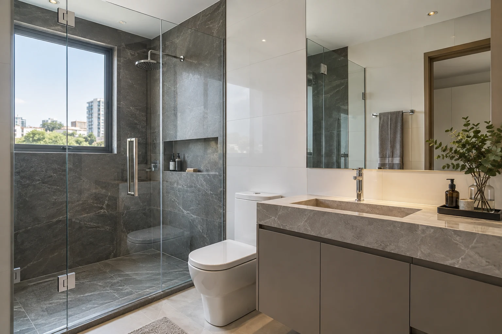
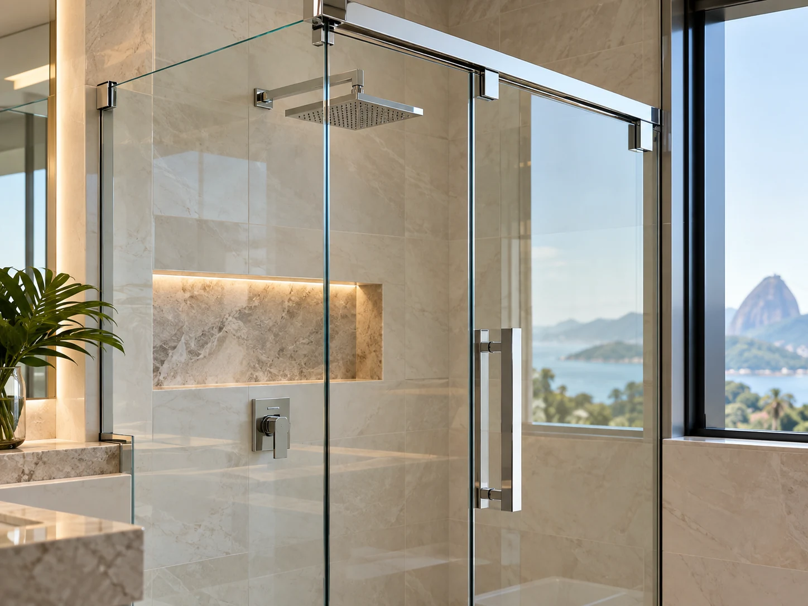
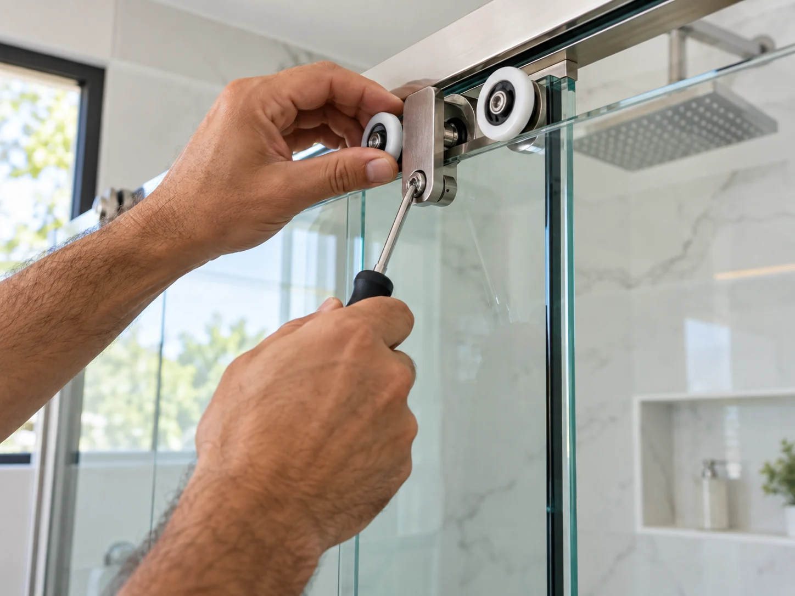

Box para
banheiro
Uma solução pensada para o espaço, a rotina e o acabamento do seu banheiro.
- Orientação para o seu ambiente
- Medidas e instalação
- Acabamento e funcionalidade
VIDRAÇARIA EM SANTOS · PONTA DA PRAIA
Box, espelhos e manutenção de temperados. Soluções para renovar o ambiente e resolver o que precisa de atenção.

01 / SOLUÇÕES EM VIDRO
Da instalação ao cuidado com o que você já tem. Conte o que precisa e vamos conversar sobre a melhor opção para o seu ambiente.
Uma solução pensada para o espaço, a rotina e o acabamento do seu banheiro.
Mais luz, amplitude e personalidade em banheiros, salas e outros ambientes.
Box travando ou com vazamento? Antes de trocar tudo, vale avaliar o problema.
DETALHES QUE FAZEM DIFERENÇA
Transparência, encaixe e acabamento: referências visuais para ajudar você a imaginar possibilidades para o seu ambiente.


02 / CUIDAR TAMBÉM É RENOVAR
Às vezes, o problema está no detalhe: uma roldana desgastada, uma ferragem ou uma vedação que precisa de atenção.
Envie fotos e descreva o que está acontecendo. A equipe pode orientar os próximos passos e avaliar a necessidade de uma visita.
Conversar sobre manutençãoPERCEBEU ALGUM DESTES SINAIS?
Dificuldade para abrir, fechar ou deslizar.
Vazamento e sinais de desgaste na vedação.
Ferragens, roldanas ou encaixes precisam de avaliação.
Se o vidro estiver trincado ou a porta estiver solta, interrompa o uso e procure uma avaliação profissional.
03 / VIDRARTE SANTOS
Na Ponta da Praia, a VIDRARTE trabalha com box, espelhos e manutenção de vidros temperados. Uma conversa direta para entender a sua necessidade e encaminhar a solução.
Envie fotos, medidas aproximadas e a localização do serviço.
A equipe orienta sobre medidas, visita e possibilidades para o seu caso.
Orçamento, materiais e agendamento definidos antes da execução.
04 / PERGUNTAS FREQUENTES
Fale pelo WhatsApp e informe o serviço desejado. Fotos, medidas aproximadas e o endereço ajudam na conversa inicial. Conforme o caso, será necessário medir ou avaliar o ambiente no local.
Nem sempre. Alguns problemas podem estar nas roldanas, ferragens, ajustes ou vedação. A possibilidade de manutenção depende de uma avaliação do conjunto e do estado do vidro.
Sim. Conte onde pretende instalar e envie as medidas aproximadas. Os detalhes e as medidas finais são alinhados com a equipe antes da execução.
Na Rua Adolfo Lutz, 89, Ponta da Praia, Santos/SP. Fale com a equipe para combinar o atendimento e confirmar a disponibilidade para o seu endereço.
Sim. Envie fotos do box inteiro e do detalhe que precisa de atenção. Elas ajudam na orientação inicial, mas podem não substituir uma avaliação presencial.
VAMOS CONVERSAR?
Escolha o serviço e comece a conversa. Seu orçamento é alinhado diretamente com a equipe.
(13) 99713-6656